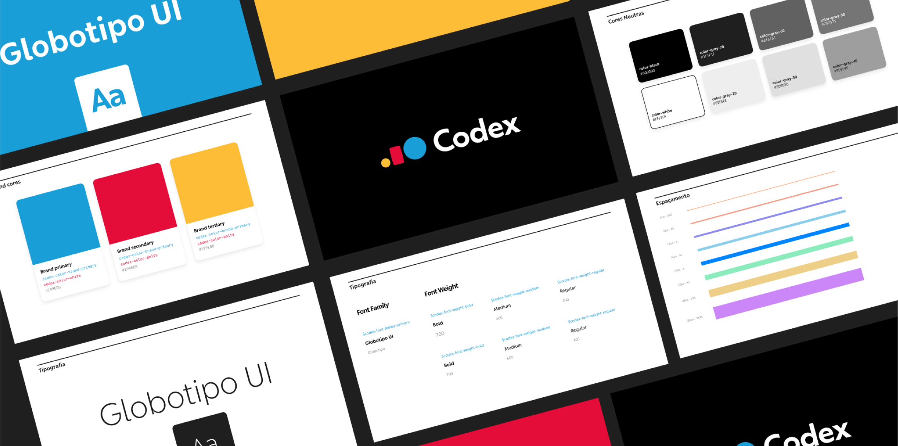
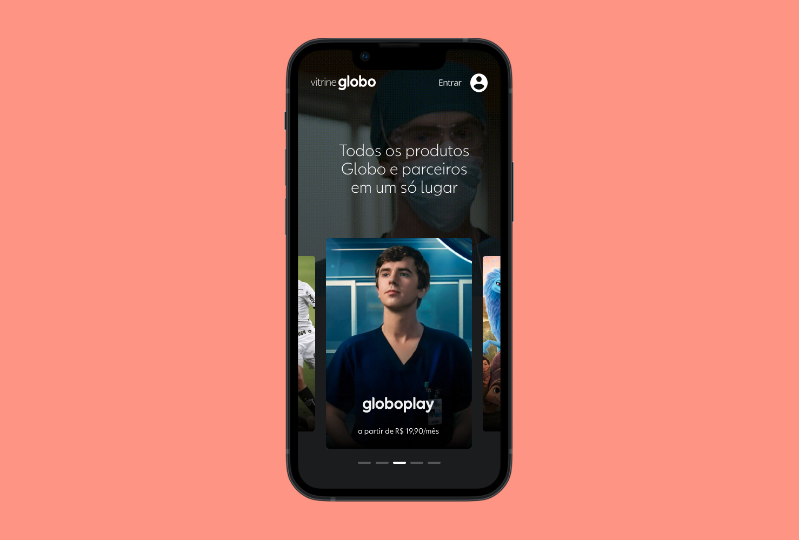
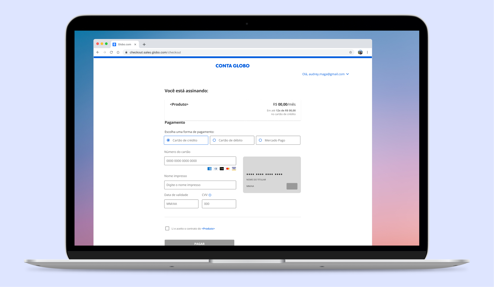

Hi! I'm a Brazilian designer currently solving complex problems at Globo
about
I work at the design system team at Globo, the largest media company in Latin America.
I've been involved in the development of chatbots, artificial inteligence, game design and sometimes I dare coding.
I consider myself a person with a holistic and analytical point of view, I am a problem solver and like to be involved in the strategy. I believe that good design can change the world.
work
-

Codex
I'm currently helping bring life to Globo's Design System. I am involved in all decisions, from scratch to launch of the Codex, a multi-platform and multi-branded Design System for over 30 products.
-

Vitrine Globo
I was involved in the creation of Vitrine Globo, a marketplace for all of Globo's and it's partners subscriptions. I was responsible for meeting business needs with user friendly experiences through multiple prototypes and user testings.
-

Checkout Web
I've worked for Globo's sales teams as a User Experience Designer focused on the customer's journey. I led the Checkout Web team close to the business and operations people, designing a new experience for a new business model Globo was pursuing.
also
-
Design System course
thestarter.ioI regularly teach principles of Design Systems at The Starter, an online design school.
-
UX Team Summit 2022
youtube.com.brI presented about Globo's Design System at UX Team Summit, an online event hosted by Mergo.